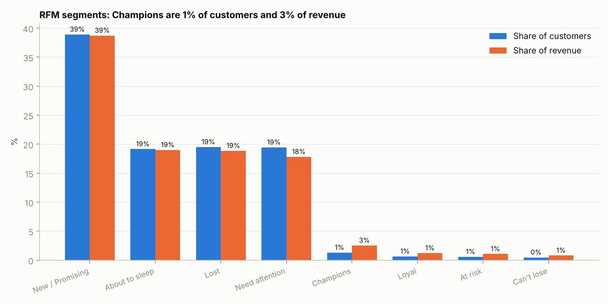

Independent analysis / Customer behaviour analysis
Understanding the opportunity for a second purchase.
I analyzed Olist ecommerce order data to understand customer segments, repeat purchase behaviour and shopping patterns, then developed ideas for retention testing.

The question
Which customer groups might benefit from a follow-up campaign, and how does repeat purchasing vary across product categories? I combined customer and order data and used recency, frequency and monetary value to build segments.
The observation
Approximately 97% of customers in the analyzed sample had one observed purchase. That makes the second purchase an important question, but the observation window matters: a customer’s later purchases may fall outside the dataset.
The recommendation
I would test a follow-up journey for recent first-time customers and compare repeat purchasing against a control group. Category differences could inform the content and timing of those tests.
The limits
Historical purchase patterns do not establish the effect of an email or advertising campaign. Without acquisition costs and margins, repeat purchase behaviour alone cannot determine how much to spend acquiring a customer.